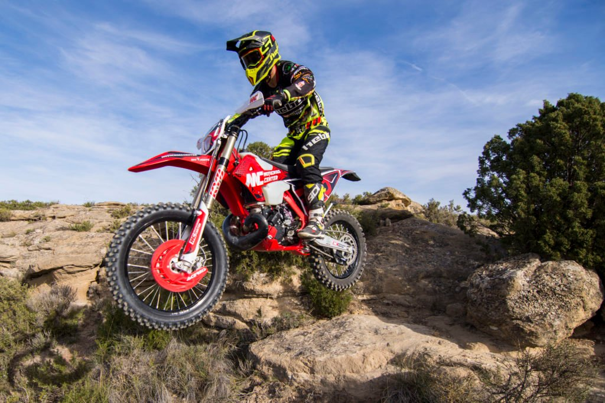
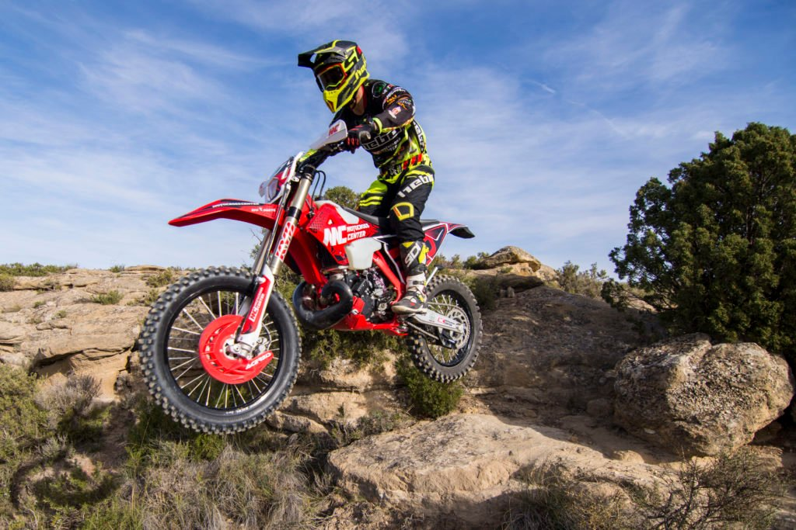

OFFROAD PARA NOVATOS: ¿ENDURO VS MOTOCROSS?
¡ Inauguramos “Offroad para novatos” ! Una nueva colección de artículos en nuestro blog para ofrecer algo de información sobre las dudas más habituales alrededor del mundo del Offroad.
Muchas personas ajenas a nuestro sector tiene dudas diferenciando estas dos disciplinas de offroad: motocross y enduro. Vamos a mencionar las principales características de ambas categorías por si queréis iniciaros en alguna de estas disciplinas.
Motocross
La principal diferencia entre estas categorías es el lugar dónde se practican. El motocross es un deporte competitivo, que se practica siempre en circuitos cerrados especialmente diseñados para ello y siempre de tierra/barro/arena. En los circuitos de motocross, podríamos enumerar los saltos, las roderas, curvas peraltadas y la zona de salida con la parrilla.
 

Enduro
La disciplina del Enduro se realiza al aire libre en caminos y sendas rurales, y se practica en grupo de una manera mucho más recreacional o como hobby. También existen competiciones muy importantes de Enduro y Hard Enduro. Dónde los participantes compiten en solitario recorriendo grandes distancias campo a través sorteando obstáculos naturales, compitiendo entre ellos o contra el crono.
¿Motos: Enduro o Cross?
Las características técnicas de las motocicletas en ambas modalidades son un factor diferenciador. Las motos de motocross suelen tener un peso mucho más reducido. No disponen de equipamiento (luces, intermitentes… ). Se basan en aportar una mayor entrega de potencia y agilidad a la hora de conducción para optimizar la mejora en el tiempo por vuelta. Por norma general, las motocicletas de Motocross no están homologadas para poder pisar cualquier camino, calle o carretera. Solo se utilizan en circuitos cerrados.
En el caso de las motocicletas de enduro son un vehículo a todos los efectos. Disponen del equipamiento reglamentario para circular por la calle (luces, intermitentes, retrovisores, matrícula, seguro…). Los accesorios de estas motos suelen estar orientados a proteger la motocicleta de posibles golpes o caídas y que resista a los agentes externos adversos.